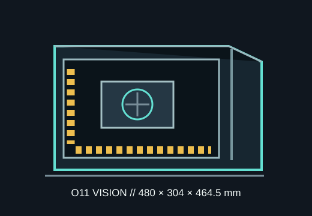

[ MODEL IDENTIFICATION // LIAN LI O11 VISION ]
Lian Li O11 Vision
A columnless, three-sided glass ATX mid-tower measuring 480 × 304 × 464.5 mm, designed around side, bottom and rear radiator locations.

FIT CAVEAT: This Vision layout has no conventional top radiator mount beneath its glass top. Use the O11 Vision manual's configuration drawing; do not substitute O11 Vision Compact dimensions or fit data.
Dimensions & fit specifications
| External dimensions | 480 × 304 × 464.5 mm (D × W × H). |
|---|---|
| Motherboards | E-ATX under 280 mm wide, ATX, microATX and Mini-ITX; check cable pass-throughs on wide E-ATX boards. |
| GPU / CPU cooler / PSU | GPU up to 430 mm long; CPU cooler up to 174 mm high; ATX PSU under 232 mm. |
| Radiators | Two positions support up to 360 mm plus one up to 240 mm; usable locations are side, bottom and rear. Manufacturer setup recommends side push-pull 360 mm, bottom intake and rear exhaust. Top is glass, not a radiator mount. |
| Drive cages | Two removable cages; each accepts two 3.5-inch HDDs or two 2.5-inch SSDs. Removing cages opens cable-routing space. |
| Graphics mounting | Seven horizontal slots and four-slot vertical GPU support; included riser is PCIe 5.0 ×16. |
Compatibility & preservation
The GPU maximum is 430 mm; vertical orientation, power-connector bend and radiator/fan thickness can make a shorter card the practical limit. The recommended side push-pull assembly consumes additional side-chamber space. The glass design relies on the documented airflow arrangement and deliberate fan placement.
- Keep the removable top/bottom supports, GPU riser, drive cages, glass hardware and rubber grommets with the chassis.
- Route PSU and front-panel cables before filling both drive cages; the cages are removable for a reason.
- Use the manual for the supported glass-panel and bottom-fan configurations; avoid carrying the assembled case by its glass.
Manufacturer sources
- Lian Li — O11 Vision product specificationsOfficial model dimensions, GPU/cooler clearance, board fit and radiator configuration.
- Lian Li — O11 Vision manual (PDF hosted by Google Drive)Manual linked in Lian Li's official product download section; installation and layout reference.